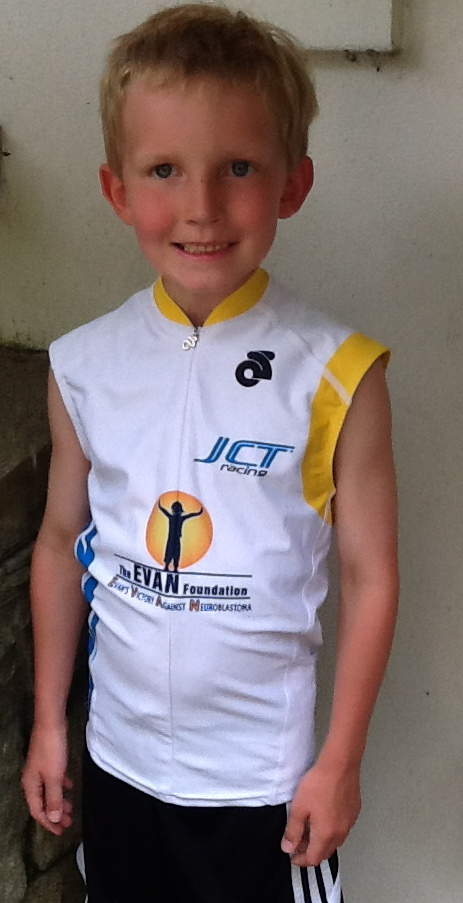
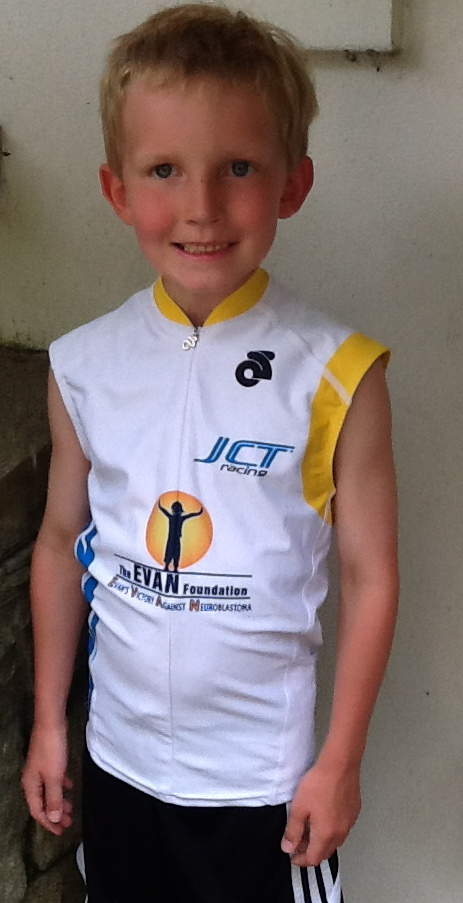

On Saturday, August 11, 2012, Wendy and Gavin’s friend Marc Wolpers competed in the inaugural U.S. Championship Ironman in New York City. After a grueling effort in a 2.4 mile swim, 112 mile bike ride, including a fall that took him an hour to recover himself and his bike, and a 26.2 mile run, Marc finished with an amazing time! Marc pledged his own money based on his training and races, AND raised additional funds for The EVAN Foundation! Wendy and Gavin are so impressed with Marc’s perseverance and dedication.
 
In addition to raising money for the Foundation, Marc, along with his kids Ashley and Jack, have started a Treats and Treasures Drive, gathering donated items for The EVAN Foundation’s Treats and Treasures cart. Wendy and Gavin are so grateful for all of Marc, Ashley and Jack’s hard work and generosity!